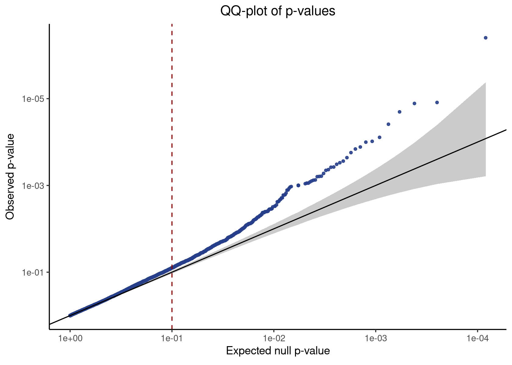
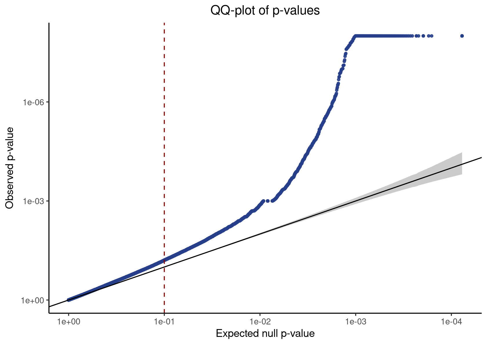
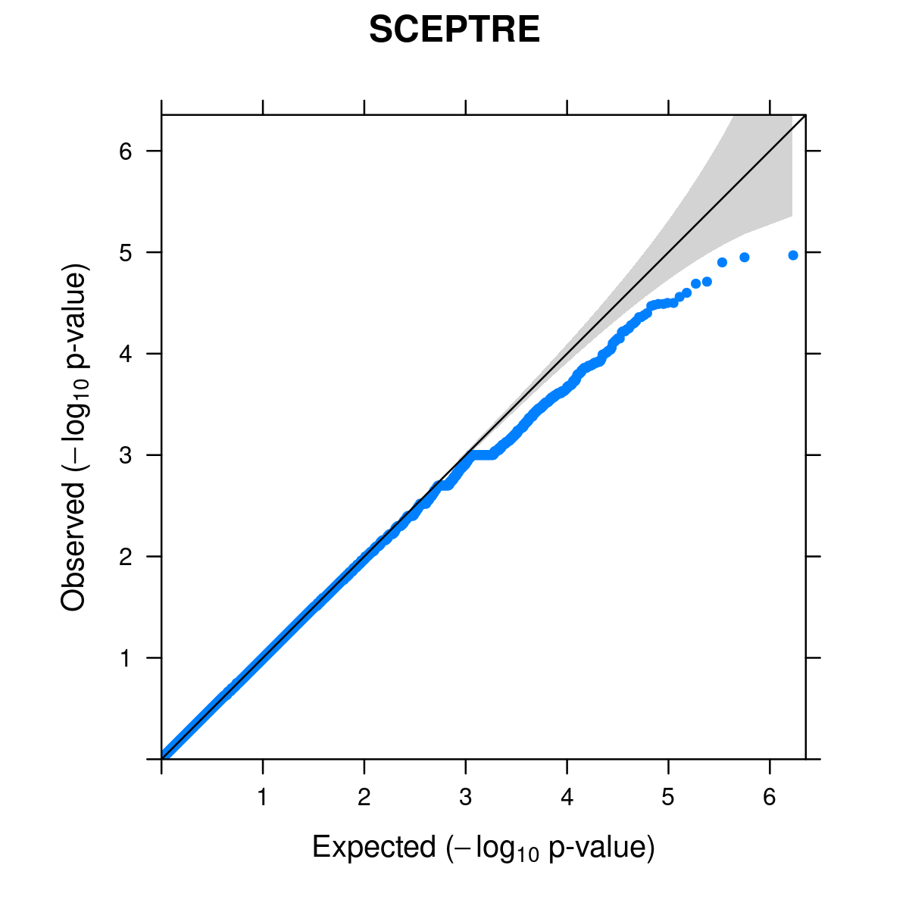

Last updated: 2022-09-16
Checks: 7 0
Knit directory: GSFA_analysis/
This reproducible R Markdown analysis was created with workflowr (version 1.7.0). The Checks tab describes the reproducibility checks that were applied when the results were created. The Past versions tab lists the development history.
Great! Since the R Markdown file has been committed to the Git repository, you know the exact version of the code that produced these results.
Great job! The global environment was empty. Objects defined in the global environment can affect the analysis in your R Markdown file in unknown ways. For reproduciblity it’s best to always run the code in an empty environment.
The command set.seed(20220524) was run prior to running
the code in the R Markdown file. Setting a seed ensures that any results
that rely on randomness, e.g. subsampling or permutations, are
reproducible.
Great job! Recording the operating system, R version, and package versions is critical for reproducibility.
Nice! There were no cached chunks for this analysis, so you can be confident that you successfully produced the results during this run.
Great job! Using relative paths to the files within your workflowr project makes it easier to run your code on other machines.
Great! You are using Git for version control. Tracking code development and connecting the code version to the results is critical for reproducibility.
The results in this page were generated with repository version e5f4b4a. See the Past versions tab to see a history of the changes made to the R Markdown and HTML files.
Note that you need to be careful to ensure that all relevant files for
the analysis have been committed to Git prior to generating the results
(you can use wflow_publish or
wflow_git_commit). workflowr only checks the R Markdown
file, but you know if there are other scripts or data files that it
depends on. Below is the status of the Git repository when the results
were generated:
Ignored files:
Ignored: .Rhistory
Ignored: .Rproj.user/
Untracked files:
Untracked: Rplots.pdf
Untracked: analysis/check_Tcells_datasets.Rmd
Untracked: analysis/fscLVM_analysis.Rmd
Untracked: analysis/spca_LUHMES_data.Rmd
Untracked: analysis/test_seurat.Rmd
Untracked: code/gsfa_negctrl_job.sbatch
Untracked: code/music_LUHMES_Yifan.R
Untracked: code/plotting_functions.R
Untracked: code/run_fscLVM_LUHMES_data.R
Untracked: code/run_gsfa_2groups_negctrl.R
Untracked: code/run_gsfa_negctrl.R
Untracked: code/run_music_LUHMES.R
Untracked: code/run_music_LUHMES_data.sbatch
Untracked: code/run_music_LUHMES_data_20topics.R
Untracked: code/run_music_LUHMES_data_20topics.sbatch
Untracked: code/run_sceptre_Tcells_data.sbatch
Untracked: code/run_sceptre_Tcells_stimulated_data.sbatch
Untracked: code/run_sceptre_Tcells_test_data.sbatch
Untracked: code/run_sceptre_Tcells_unstimulated_data.sbatch
Untracked: code/run_sceptre_permuted_data.sbatch
Untracked: code/run_spca_LUHMES.R
Untracked: code/run_spca_TCells.R
Untracked: code/run_twostep_clustering_LUHMES_data.sbatch
Untracked: code/run_twostep_clustering_Tcells_data.sbatch
Untracked: code/run_unguided_gsfa_LUHMES.R
Untracked: code/run_unguided_gsfa_LUHMES.sbatch
Untracked: code/run_unguided_gsfa_Tcells.R
Untracked: code/run_unguided_gsfa_Tcells.sbatch
Untracked: code/sceptre_LUHMES_data.R
Untracked: code/sceptre_Tcells_stimulated_data.R
Untracked: code/sceptre_Tcells_unstimulated_data.R
Untracked: code/sceptre_permutation_analysis.R
Untracked: code/sceptre_permute_analysis.R
Untracked: code/seurat_sim_fpr_tpr.R
Untracked: code/unguided_GFSA_mixture_normal_prior.cpp
Unstaged changes:
Modified: analysis/index.Rmd
Modified: analysis/music_LUHMES_data.Rmd
Modified: analysis/sceptre_TCells_data.Rmd
Modified: analysis/twostep_clustering_LUHMES_data.Rmd
Modified: code/run_sceptre_LUHMES_data.R
Modified: code/run_sceptre_LUHMES_data.sbatch
Modified: code/run_sceptre_LUHMES_permuted_data.R
Modified: code/run_sceptre_Tcells_permuted_data.R
Modified: code/run_sceptre_cropseq_data.sbatch
Modified: code/run_twostep_clustering_LUHMES_data.R
Modified: code/sceptre_analysis.R
Note that any generated files, e.g. HTML, png, CSS, etc., are not included in this status report because it is ok for generated content to have uncommitted changes.
These are the previous versions of the repository in which changes were
made to the R Markdown (analysis/sceptre_LUHMES_data.Rmd)
and HTML (docs/sceptre_LUHMES_data.html) files. If you’ve
configured a remote Git repository (see ?wflow_git_remote),
click on the hyperlinks in the table below to view the files as they
were in that past version.
| File | Version | Author | Date | Message |
|---|---|---|---|---|
| Rmd | e5f4b4a | kevinlkx | 2022-09-16 | updated results with new version and added permutation result |
| html | 0b325fb | kevinlkx | 2022-05-26 | Build site. |
| Rmd | 4b70cfd | kevinlkx | 2022-05-26 | updated code links |
| html | a38de80 | kevinlkx | 2022-05-26 | Build site. |
| Rmd | 144346c | kevinlkx | 2022-05-26 | updated document format |
| html | dab64ad | kevinlkx | 2022-05-26 | Build site. |
| Rmd | c21a39f | kevinlkx | 2022-05-26 | SCEPTRE analysis on LUHMES data |
CROP-seq datasets:
/project2/xinhe/yifan/Factor_analysis/shared_data/ The data
are Seurat objects, with raw gene counts stored in obj@assays\(RNA@counts, and cell meta data stored in
obj@meta.data. Normalized and scaled data used for GSFA are stored in
obj@assays\)RNA@scale.data , the rownames of which are the 6k
genes used for GSFA.
Scripts for running SCEPTRE:
mkdir -p /project2/xinhe/kevinluo/GSFA/sceptre_analysis/log
cd /project2/xinhe/kevinluo/GSFA/sceptre_analysis/log
sbatch --mem=50G --cpus-per-task=10 --partition=xinhe ~/projects/GSFA_analysis/code/run_sceptre_LUHMES_data.sbatchPermutation analysis
mkdir -p /project2/xinhe/kevinluo/GSFA/sceptre_analysis/log
cd /project2/xinhe/kevinluo/GSFA/sceptre_analysis/log
for i in {1..10}
do
sbatch --mem=50G --cpus-per-task=10 ~/projects/GSFA_analysis/code/run_sceptre_LUHMES_permuted_data.sbatch $i
done
# run_sceptre_LUHMES_permuted_data.sbatch runs run_sceptre_LUHMES_permuted_data.RLoad packages
dyn.load('/software/geos-3.7.0-el7-x86_64/lib64/libgeos_c.so') # attach the geos lib for Seurat
suppressPackageStartupMessages(library(tidyverse))
library(cowplot)
library(Matrix)
library(sceptre)
library(Seurat)
source("code/plotting_functions.R")Load the Seurat object of LUHMES data
LUHMES_data <- readRDS('/project2/xinhe/yifan/Factor_analysis/shared_data/LUHMES_cropseq_data_seurat.rds')
datadir <- '/project2/xinhe/kevinluo/GSFA/sceptre_analysis/LUHMES_cropseq_data'We first prepare three separate data objects required to run SCEPTRE: the gene expression matrix, the perturbation matrix, and the covariate matrix.
gene_matrix <- LUHMES_data@assays$RNA@counts
# gene-by-cell expression matrix
gene_matrix[1:10, 1:3]
dim(gene_matrix)
# 10 x 3 sparse Matrix of class "dgCMatrix"
# Run1_AAACCTGAGATCGATA Run1_AAACCTGCAGCTCGAC
# ENSG00000243485 . .
# ENSG00000237613 . .
# ENSG00000186092 . .
# ENSG00000238009 . .
# ENSG00000239945 . .
# ENSG00000239906 . .
# ENSG00000241599 . .
# ENSG00000279928 . .
# ENSG00000279457 1 .
# ENSG00000228463 1 .
# Run1_AAACCTGCATTAGCCA
# ENSG00000243485 .
# ENSG00000237613 .
# ENSG00000186092 .
# ENSG00000238009 .
# ENSG00000239945 .
# ENSG00000239906 .
# ENSG00000241599 .
# ENSG00000279928 .
# ENSG00000279457 1
# ENSG00000228463 .
# [1] 33694 8708metadata <- LUHMES_data@meta.data
metadata[1:5, ]
covariate_matrix <- metadata[,c('orig.ident', 'nCount_RNA', 'nFeature_RNA', 'percent_mt')]
covariate_matrix[1:5,]
dim(covariate_matrix)
# orig.ident nCount_RNA nFeature_RNA ADNP ARID1B ASH1L
# Run1_AAACCTGAGATCGATA LUHMES_Run1 10655 3287 0 0 0
# Run1_AAACCTGCAGCTCGAC LUHMES_Run1 8648 2791 0 0 0
# Run1_AAACCTGCATTAGCCA LUHMES_Run1 9015 2922 0 0 0
# Run1_AAACCTGGTAAGGGCT LUHMES_Run1 9090 2925 0 0 0
# Run1_AAACCTGGTTCCGTCT LUHMES_Run1 10182 3052 0 0 0
# CHD2 CHD8 CTNND2 DYRK1A HDAC5 MECP2 MYT1L Nontargeting
# Run1_AAACCTGAGATCGATA 0 1 0 0 0 0 0 0
# Run1_AAACCTGCAGCTCGAC 0 0 0 0 0 0 0 0
# Run1_AAACCTGCATTAGCCA 1 0 0 0 0 0 0 0
# Run1_AAACCTGGTAAGGGCT 0 0 0 1 0 0 0 0
# Run1_AAACCTGGTTCCGTCT 0 0 0 0 1 0 0 0
# POGZ PTEN RELN SETD5 percent_mt
# Run1_AAACCTGAGATCGATA 0 0 0 0 3.594557
# Run1_AAACCTGCAGCTCGAC 0 0 1 0 2.717391
# Run1_AAACCTGCATTAGCCA 0 0 0 0 2.995008
# Run1_AAACCTGGTAAGGGCT 0 0 0 0 3.080308
# Run1_AAACCTGGTTCCGTCT 0 0 0 0 3.142801
# orig.ident nCount_RNA nFeature_RNA percent_mt
# Run1_AAACCTGAGATCGATA LUHMES_Run1 10655 3287 3.594557
# Run1_AAACCTGCAGCTCGAC LUHMES_Run1 8648 2791 2.717391
# Run1_AAACCTGCATTAGCCA LUHMES_Run1 9015 2922 2.995008
# Run1_AAACCTGGTAAGGGCT LUHMES_Run1 9090 2925 3.080308
# Run1_AAACCTGGTTCCGTCT LUHMES_Run1 10182 3052 3.142801
# [1] 8708 4combined_perturbation_matrix <- t(metadata[,4:18])
dim(combined_perturbation_matrix)
combined_perturbation_matrix[1:10,1:3]
range(combined_perturbation_matrix)
# [1] 15 8708
# Run1_AAACCTGAGATCGATA Run1_AAACCTGCAGCTCGAC Run1_AAACCTGCATTAGCCA
# ADNP 0 0 0
# ARID1B 0 0 0
# ASH1L 0 0 0
# CHD2 0 0 1
# CHD8 1 0 0
# CTNND2 0 0 0
# DYRK1A 0 0 0
# HDAC5 0 0 0
# MECP2 0 0 0
# MYT1L 0 0 0
# [1] 0 1Include the 6k genes used for GSFA as candidates
# Normalized and scaled data used for GSFA, the rownames of which are the 6k genes used for GSFA
scaled_gene_matrix <- LUHMES_data@assays$RNA@scale.data
dim(scaled_gene_matrix)
selected_gene_id <- rownames(scaled_gene_matrix)
all(selected_gene_id %in% rownames(gene_matrix))
# [1] 6000 8708
# [1] TRUEgRNA_group <- rownames(combined_perturbation_matrix)
pairs <- expand.grid(selected_gene_id, gRNA_group)
gene_gRNA_group_pairs <- data.frame(gene_id = pairs$Var1, gRNA_group = pairs$Var2, pair_type = "candidate")
gene_gRNA_group_pairs[gene_gRNA_group_pairs$gRNA_group == "Nontargeting", "pair_type"] <- "negative_control"
table(gene_gRNA_group_pairs$pair_type)
table(gene_gRNA_group_pairs$gRNA_group)
dim(gene_gRNA_group_pairs)
#
# candidate negative_control
# 84000 6000
#
# ADNP ARID1B ASH1L CHD2 CHD8 CTNND2
# 6000 6000 6000 6000 6000 6000
# DYRK1A HDAC5 MECP2 MYT1L Nontargeting POGZ
# 6000 6000 6000 6000 6000 6000
# PTEN RELN SETD5
# 6000 6000 6000
# [1] 90000 3save(list = c("gene_matrix", "combined_perturbation_matrix", "covariate_matrix"),
file = file.path(datadir, 'data.matrices.RData'))
saveRDS(gene_gRNA_group_pairs, file.path(datadir, "gene.gRNA.group.pairs.rds"))outdir <- '/project2/xinhe/kevinluo/GSFA/sceptre_analysis/LUHMES_data_updated/sceptre_output'
result <- readRDS(file.path(outdir, 'sceptre.result.rds'))
head(result, 10)
# gene_id gRNA_id pair_type p_value z_value log_fold_change
# 1 ENSG00000251562 ADNP candidate 8.276198e-04 -2.7128544 -0.042399626
# 2 ENSG00000167552 ADNP candidate 5.699734e-05 5.6529476 0.090952484
# 3 ENSG00000205542 ADNP candidate 1.175300e-03 -3.2572089 -0.077037279
# 4 ENSG00000104722 ADNP candidate 5.498633e-07 -11.9722455 -0.218557354
# 5 ENSG00000156508 ADNP candidate 6.863815e-01 -0.4263849 -0.040725865
# 6 ENSG00000034510 ADNP candidate 5.594500e-02 2.2087809 0.025101774
# 7 ENSG00000198712 ADNP candidate 8.261282e-01 0.1660938 -0.005275184
# 8 ENSG00000213190 ADNP candidate 1.769592e-01 1.4053725 0.012649649
# 9 ENSG00000184009 ADNP candidate 5.329976e-01 0.7832493 -0.007898580
# 10 ENSG00000198668 ADNP candidate 7.860573e-03 4.6174578 0.042193477Negative control pairs
neg_control_p_vals <- result %>% filter(pair_type == "negative_control") %>% pull(p_value)
make_qq_plot(neg_control_p_vals)
Candidate pairs We extract the p-values corresponding to the candidate pairs and apply a Benjamini-Hochberg (BH) correction to adjust for multiple testing.
candidate_pair_results <- result %>% filter(pair_type == "candidate") %>%
mutate(p_val_adj = p.adjust(p_value, method = "BH"))
head(candidate_pair_results)
candidate_pvals <- candidate_pair_results %>% pull(p_value)
make_qq_plot(candidate_pvals)
# gene_id gRNA_id pair_type p_value z_value log_fold_change
# 1 ENSG00000251562 ADNP candidate 8.276198e-04 -2.7128544 -0.04239963
# 2 ENSG00000167552 ADNP candidate 5.699734e-05 5.6529476 0.09095248
# 3 ENSG00000205542 ADNP candidate 1.175300e-03 -3.2572089 -0.07703728
# 4 ENSG00000104722 ADNP candidate 5.498633e-07 -11.9722455 -0.21855735
# 5 ENSG00000156508 ADNP candidate 6.863815e-01 -0.4263849 -0.04072587
# 6 ENSG00000034510 ADNP candidate 5.594500e-02 2.2087809 0.02510177
# p_val_adj
# 1 0.1089391252
# 2 0.0160663656
# 3 0.1220336025
# 4 0.0003446905
# 5 0.9638421091
# 6 0.6058244221We call pairs with an adjusted p-value of less or equal than 0.1 significant; the discovery set (i.e., the set of significant pairs) has a false discovery rate (FDR) of 10%.
discovery_set <- candidate_pair_results %>% filter(p_val_adj <= 0.1)
head(discovery_set)
# gene_id gRNA_id pair_type p_value z_value log_fold_change
# 1 ENSG00000167552 ADNP candidate 5.699734e-05 5.652948 0.09095248
# 2 ENSG00000104722 ADNP candidate 5.498633e-07 -11.972246 -0.21855735
# 3 ENSG00000124766 ADNP candidate 2.428708e-06 -5.419528 -0.08567983
# 4 ENSG00000173267 ADNP candidate 2.220446e-16 12.720042 0.17604320
# 5 ENSG00000131711 ADNP candidate 1.852806e-05 4.984110 0.08523870
# 6 ENSG00000277586 ADNP candidate 6.380460e-05 -6.488863 -0.15174885
# p_val_adj
# 1 1.606637e-02
# 2 3.446905e-04
# 3 1.214354e-03
# 4 1.434750e-12
# 5 6.539316e-03
# 6 1.763022e-02Pool results from 10 permuted data sets
outdir <- "/project2/xinhe/kevinluo/GSFA/sceptre_analysis/LUHMES_data_updated/sceptre_output/permutation"
sceptre_res <- data.frame()
for(permute_num in 1:10){
cat("permutation set: ",permute_num, "\n")
res_dir <- paste0(outdir, "/perm_", permute_num)
res <- readRDS(file.path(res_dir, 'sceptre.result.rds'))
sceptre_res <- rbind(sceptre_res, data.frame(permute_num = permute_num, res))
}
nrow(sceptre_res)
anyNA(sceptre_res$p_value)
# permutation set: 1
# permutation set: 2
# permutation set: 3
# permutation set: 4
# permutation set: 5
# permutation set: 6
# permutation set: 7
# permutation set: 8
# permutation set: 9
# permutation set: 10
# [1] 900000
# [1] FALSEQQ-plot for candidate pairs
candidate_pair_results <- sceptre_res %>% filter(pair_type == "candidate") %>%
mutate(p_val_adj = p.adjust(p_value, method = "BH"))
candidate_p_vals <- candidate_pair_results %>% pull(p_value)# pdf(file.path(outdir, "LUHMES_permutation_qqplot.pdf"), width = 5, height = 5)
qqunif.plot(candidate_p_vals, main = "SCEPTRE")
# Loading required package: grid
# dev.off()
sessionInfo()
# R version 4.2.0 (2022-04-22)
# Platform: x86_64-pc-linux-gnu (64-bit)
# Running under: CentOS Linux 7 (Core)
#
# Matrix products: default
# BLAS/LAPACK: /software/openblas-0.3.13-el7-x86_64/lib/libopenblas_haswellp-r0.3.13.so
#
# locale:
# [1] LC_CTYPE=en_US.UTF-8 LC_NUMERIC=C LC_TIME=C
# [4] LC_COLLATE=C LC_MONETARY=C LC_MESSAGES=C
# [7] LC_PAPER=C LC_NAME=C LC_ADDRESS=C
# [10] LC_TELEPHONE=C LC_MEASUREMENT=C LC_IDENTIFICATION=C
#
# attached base packages:
# [1] grid stats graphics grDevices utils datasets methods
# [8] base
#
# other attached packages:
# [1] lattice_0.20-45 sp_1.4-7 SeuratObject_4.1.0 Seurat_4.1.1
# [5] sceptre_0.1.0 Matrix_1.4-1 cowplot_1.1.1 forcats_0.5.1
# [9] stringr_1.4.0 dplyr_1.0.9 purrr_0.3.4 readr_2.1.2
# [13] tidyr_1.2.0 tibble_3.1.7 ggplot2_3.3.6 tidyverse_1.3.1
# [17] workflowr_1.7.0
#
# loaded via a namespace (and not attached):
# [1] readxl_1.4.0 backports_1.4.1 plyr_1.8.7
# [4] igraph_1.3.4 lazyeval_0.2.2 splines_4.2.0
# [7] listenv_0.8.0 scattermore_0.8 digest_0.6.29
# [10] htmltools_0.5.2 fansi_1.0.3 magrittr_2.0.3
# [13] tensor_1.5 cluster_2.1.3 ROCR_1.0-11
# [16] tzdb_0.3.0 globals_0.15.0 modelr_0.1.8
# [19] matrixStats_0.62.0 spatstat.sparse_2.1-1 colorspace_2.0-3
# [22] rvest_1.0.2 ggrepel_0.9.1 haven_2.5.0
# [25] xfun_0.30 callr_3.7.0 crayon_1.5.1
# [28] jsonlite_1.8.0 progressr_0.10.0 spatstat.data_2.2-0
# [31] survival_3.3-1 zoo_1.8-10 glue_1.6.2
# [34] polyclip_1.10-0 gtable_0.3.0 leiden_0.4.2
# [37] future.apply_1.9.0 abind_1.4-5 scales_1.2.0
# [40] DBI_1.1.3 spatstat.random_2.2-0 miniUI_0.1.1.1
# [43] Rcpp_1.0.8.3 viridisLite_0.4.0 xtable_1.8-4
# [46] reticulate_1.24 spatstat.core_2.4-2 htmlwidgets_1.5.4
# [49] httr_1.4.3 RColorBrewer_1.1-3 ellipsis_0.3.2
# [52] ica_1.0-2 farver_2.1.0 pkgconfig_2.0.3
# [55] uwot_0.1.11 sass_0.4.1 dbplyr_2.1.1
# [58] deldir_1.0-6 utf8_1.2.2 tidyselect_1.1.2
# [61] rlang_1.0.2 reshape2_1.4.4 later_1.3.0
# [64] munsell_0.5.0 cellranger_1.1.0 tools_4.2.0
# [67] cli_3.3.0 generics_0.1.2 broom_0.8.0
# [70] ggridges_0.5.3 evaluate_0.15 fastmap_1.1.0
# [73] yaml_2.3.5 goftest_1.2-3 processx_3.5.3
# [76] knitr_1.39 fs_1.5.2 fitdistrplus_1.1-8
# [79] RANN_2.6.1 pbapply_1.5-0 future_1.25.0
# [82] nlme_3.1-157 whisker_0.4 mime_0.12
# [85] xml2_1.3.3 compiler_4.2.0 rstudioapi_0.13
# [88] plotly_4.10.0 png_0.1-7 spatstat.utils_2.3-1
# [91] reprex_2.0.1 bslib_0.3.1 stringi_1.7.6
# [94] highr_0.9 ps_1.7.0 rgeos_0.5-9
# [97] vctrs_0.4.1 pillar_1.7.0 lifecycle_1.0.1
# [100] spatstat.geom_2.4-0 lmtest_0.9-40 jquerylib_0.1.4
# [103] RcppAnnoy_0.0.19 data.table_1.14.2 irlba_2.3.5
# [106] httpuv_1.6.5 patchwork_1.1.1 R6_2.5.1
# [109] promises_1.2.0.1 KernSmooth_2.23-20 gridExtra_2.3
# [112] parallelly_1.31.1 codetools_0.2-18 MASS_7.3-56
# [115] assertthat_0.2.1 rprojroot_2.0.3 withr_2.5.0
# [118] sctransform_0.3.3 mgcv_1.8-40 parallel_4.2.0
# [121] hms_1.1.1 rpart_4.1.16 rmarkdown_2.14
# [124] Rtsne_0.16 git2r_0.30.1 getPass_0.2-2
# [127] shiny_1.7.1 lubridate_1.8.0